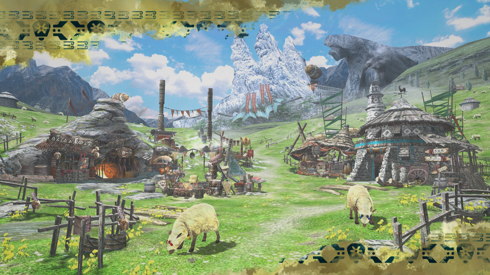
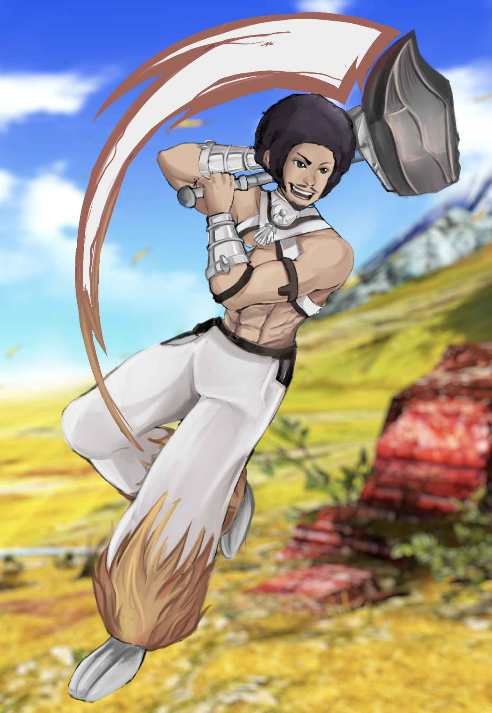
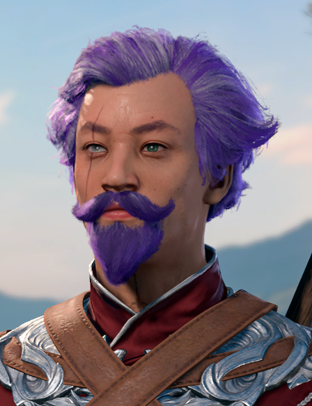
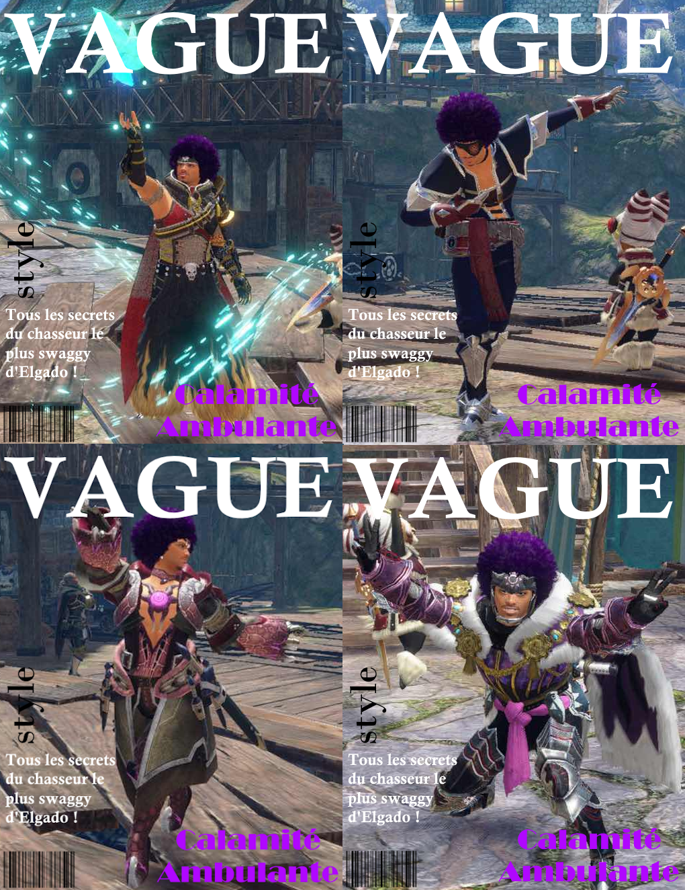
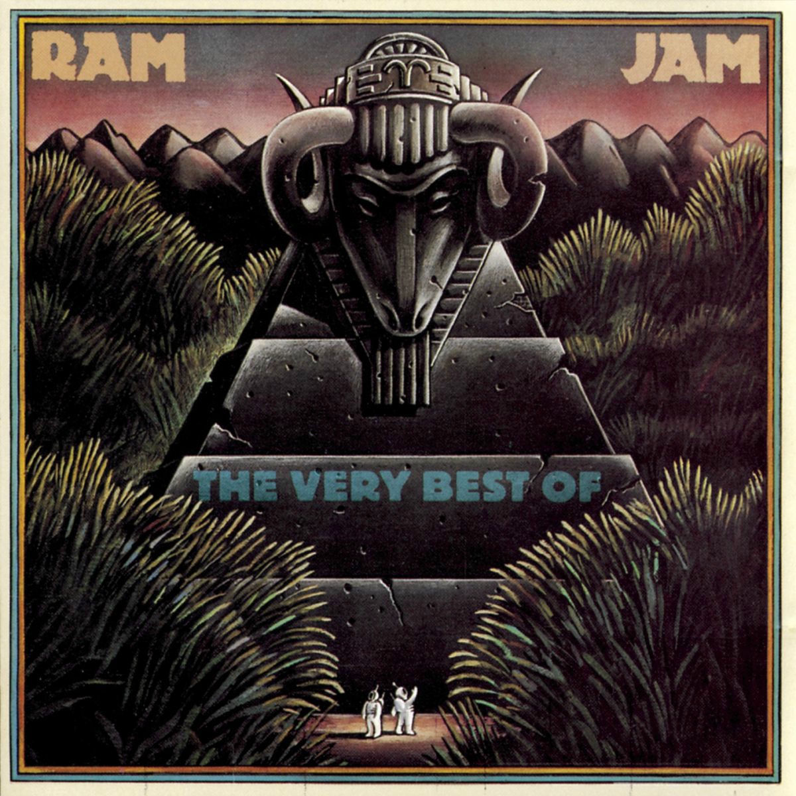

TUL'NUTE RHYIS
Chasseur Spectaculaire
|
|
|
|
|
|
|
|
|
|
|
|
|
|
|
|

Si ça ne marche pas du premier coup, utilise plus d'explosifs !
❖ ----- Armure Principale ----- ❖
|
|
/ |
|---|---|
|
|
Tunique légère en coquilles |
|
|
Manchettes en coquilles |
|
|
Ceinture en cuir noir Remobra |
|
|
Hakama ample d'or en fourrure de Rajang |
❖ ----- Apparence physique et personnalité ----- ❖
Instantanément reconnaissable à sa coupe disco violette, Tul'nute est un chasseur flamboyant qui laisse une certaine impression à chaque personne qui le rencontre. Adoré des enfants et redouté des parents, c'est une mauvaise influence naïve et chaotique. Tul'nute peut être décrit comme étant brave mais simple d'esprit, ou encore indomptable mais spectaculairement malchanceux. Il n'en reste pas moins infiniment débrouillard, sachant tourner chaque mauvaise situation en sa faveur d'une manière ou d'une autre. Tul'nute préfère les paris explosifs et le chaos qui en met plein la vue aux techniques de chasse "normales" (barbantes) et "sans risques" (sans intérêt).
En plus de sa coupe de cheveux signature, Tul'nute porte une fine moustache et un bouc violets assortis. Il alterne plusieurs armures, préférant des équipements où il est facile de bouger rapidement pour fuir un monstre enragé. De temps à autre, il n'est pas rare de le voir chasser en portant un set en Chameleos Éveillé, ou simplement revenir sur son armure traditionnelle de Bherna quand il se sent nostalgique.
❖ ----- Biographie ----- ❖
Né sur les quais de Moga, un petit village de pêcheurs rattaché à une île déserte, Tul'nute Rhyis a grandi en idolâtrant un père qu’il connaissait à peine. Élevé par sa mère aimante et par tout le village, Tul’nute se fixa pour objectif de devenir le genre de légende qu’il imaginait son père être : voyager, aider les gens et inscrire son nom dans l’Histoire.
Dès l’enfance, il était simple d’esprit, intrépide de la pire manière possible, et catastrophiquement malchanceux. Les miroirs se fissuraient à son passage, les Felynes feulaient, les plantations mourraient à son contact. À tel point que les villageois inventèrent la "loi de Tul'nute" : si quelque chose peut mal tourner en sa présence, alors ça va mal tourner. Tout atteignit son point de rupture le jour où il trébucha sur le port et provoqua au fil d'une réaction en chaîne l’enfoncement d’un quai sous l'océan. Comprenant très jeune qu’il éloignait les gens autour de lui, il choisit de partir pour poursuivre ses rêves.
Tul'nute erra jusqu’à ce que la Guilde l’emploie comme assistant et coursier. Il devint enfin chasseur en arrivant à Bherna, où le destin le mit en duo avec un Felyne errant nommé Escla'v. À eux deux, ils formèrent un duo comique qui ne devrait pas fonctionner, mais pourtant redoutablement efficace : les plans déjantés de Tul'nute et l’assistance réticente d’Escla'v (ainsi qu’un enthousiasme partagé pour les explosifs) transformèrent leurs catastrophes semi-contrôlées en victoires étrangement efficaces.
Il gagna en notoriété lors du lancement du dirigeable de la Wycadémie et laissa ses traces partout dans le monde, notamment à Kokoto, Pokke, Kamura et Elgado. Parmi les chasses qui lui sont attribuées figurent le Valstrax, d’innombrables Brachydios Tempêtes, l’Ahtal-Ka et même la tristement célèbre Narwa Mère-de-Tous. Certaines rumeurs murmurent même qu’il aurait affronté des Dragons Noirs, même si les gens sensés lèvent les yeux au ciel à tout cela.
Aujourd’hui, nul ne sait où se trouve Tul'nute. Il y a de fortes chances qu’il soit en train de tituber vers le prochain village, devenant par accident une légende encore plus grande que le père qu’il poursuivait.
❖ ----- Relations -----❖

Escla'v
Partenaire Palico chaotique, assistant récalcitrant, bonne conscience et agent de sécurité anti-explosion. Escla'v est souvent vu à tort comme une simple mascotte adorable, quand il s'agit en réalité de la seule raison pourquoi Tul'nute n'a pas encore été arrêté par la Guilde.
Souvent exaspéré par son partenaire, il partage secrètement le même amour des explosions que celui-ci. Il est étonnamment le plus responsable du duo et charie souvent Tul'nute sans que ce dernier ne s'en rende compte. Escla'v est devenu avec le temps adepte à naviguer le chaos ambiant de leur relation, sauvant son chasseur de lui-même.

Vald Rhyis
Héros vagabond à la moralité douteuse, il disparut peu après une brève rencontre avec la mère de Tul'nute. Pour ce dernier, inconscient des travers de son père, il est un modèle idéalisé malgré son absence. Vald est un mythe que Tul'nute cherche à dépasser sans amertume.
L'idée de Vald guide bien des fantasmes héroïques de son fils qui, déjà jeune, jouait à défendre la veuve et l'orphelin avec des batons en bois sur les quais de Moga. Tul'nute n'a jamais entendu que la légende de son père et voyage dans ses pas.
❖ ----- Galerie ----- ❖
Artwork par Dunette

Série de photos prises pour un numéro du magazine Vague.

Anecdotes
- Populaire auprès des enfants, Tul'nute est réputé pour donner les pires conseils possibles tirés de sa propre expérience.
- Ceux qui engagent Tul'nute se plaignent souvent des dégâts matériels. Cependant, certains disent que ça fait partie de son charme. Tul'nute lui-même n'a que peu d'opinion sur la question, étant assez inconscient des dommages accidentels qu'il provoque.
- Les choix vestimentaires de Tul'nute mettent souvent en valeur son torse musclé avec très peu, voire aucune, pudeur. Il est totalement inconscient de l’effet qu’il peut ainsi produire sur les autres.
- La tenue la plus fréquemment portée par Tul'nute inclut une veste très légère en coquillages. Elle lui a été vendue par une intendante de Guilde comme "offrant la protection de l'océan à ceux qui la portent". C'est en réalité un simple bikini.
